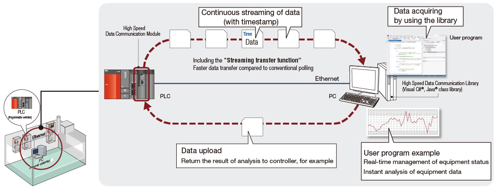
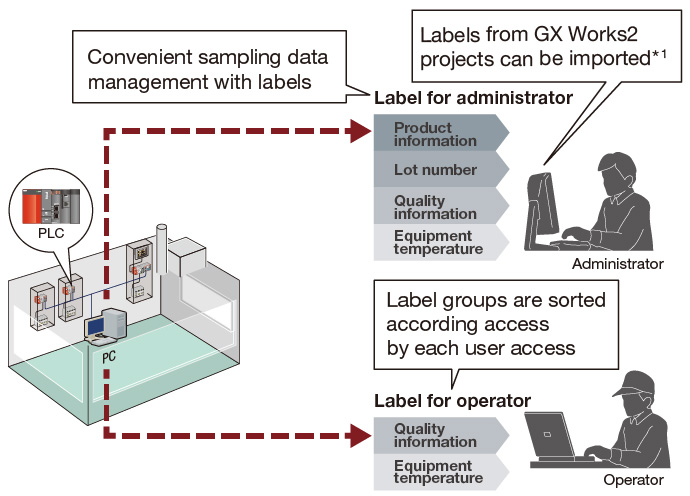

Controllers MELSEC-Q Series
Product features -Network-

High speed data communication
Supporting productivity and enhanced device value through real-time transfer of control data
High speed data communication module
High data accuracy communication from the programmable controller to the personal computer can be easily realized with the high-speed data communication module (QJ71DC96). Data can be streamed at high speed to the personal computer by synchronizing with the controller scan cycle without having to continuously poll data as was previously achieved. This feature realizes improved productivity by resulting in real-time control data analysis on the personal computer.
Fast and reliable large data transfer in real-time
- Transfer of large data volumes across a very short sampling period can be realized with “Streaming transfer” feature. High data integrity can be easily achieved across TCIP/IP Ethernet to personal computer based servers.

Data acquisition without considering protocol
- Communication between the module and a personal computer is provided in the form of Visual C#® and Java® class libraries. These class libraries enable a simple personal computer program to acquire data from the programmable controller without considering the communication protocol.

Labels for effective data sampling
- Labeling (naming) each personal computer data makes classifications of transferring data simple. Multiple labels are grouped and sorted as label groups by equipment or user. Label group access control corresponding to user levels is also possible.

- *1.The engineering software GX Works2 Version 1.44 W or later is required when the global labels of GX Works2 project are imported to the Configuration Tool of this module.